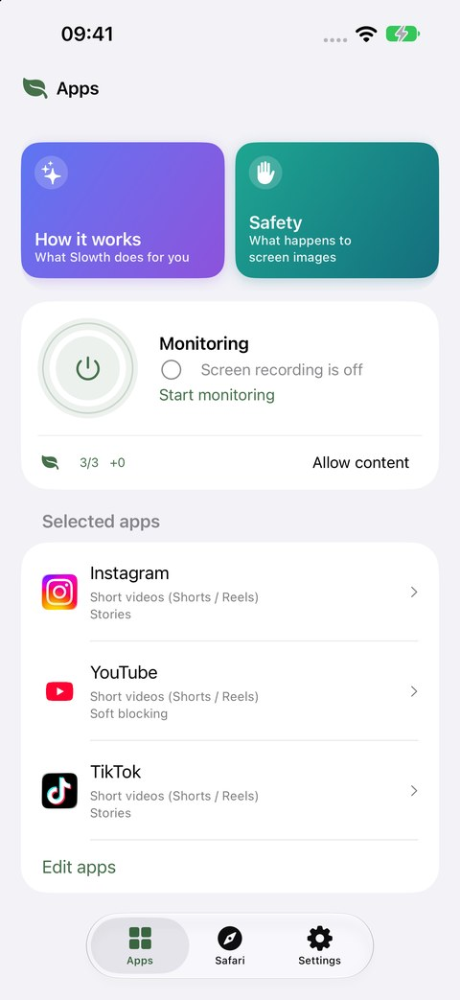

Blocage d'applications pour iPhone et iPad
Bloquez les Reels et les Shorts. Directement dans vos apps.
Bloquez Reels , Shorts et d'autres courtes vidéos dans Instagram , YouTube , Facebook , X (Twitter) et d'autres applications sociales. Ou choisissez n'importe quelle application à bloquer avec Temps d’écran.
Gratuit et open source Aucun compte requis
Lorsque de courtes vidéos sont détectées, Slowth bloque l'application. Utilise Temps d’écran et la surveillance d'écran que vous démarrez. Comment ça marche


Dans vos applications iPhone et iPad
Également dans Safari iPhone , iPad et Mac
Sur votre appareil Aucun compte. Aucun suivi.

Vos applications. Vos règles de blocage.
Choisissez les applications. Arrêtez le défilement sans fin.
Bloquez toute application de votre choix sur iPhone et iPad. Ou interrompez de courtes vidéos et histoires sur les applications sociales grâce à la détection de contenu sur l'appareil.
- N'importe quelle application de votre choix
- Sélectionnez les applications dans le sélecteur Temps d’écran d'Apple : réseaux sociaux, jeux et tout ce dont vous souhaitez faire une pause. Lorsque la surveillance est désactivée, les applications sélectionnées sont bloquées ; le blocage logiciel et les pauses temporaires changent lorsque l'accès est autorisé.
- Reels et Shorts dans l'application
- Instagram Reels , YouTube Shorts , Facebook , X (Twitter) et autres réseaux sociaux avec des vidéos courtes : choisissez le contenu que vous souhaitez interrompre. Lorsque la surveillance est activée, la détection bloque brièvement l'application afin que vous puissiez vous éloigner.
- Une pause quand vous en avez besoin
- Utilisez une feuille pour un accès temporaire, puis revenez à vos limites. Les applications et Safari partagent trois pauses par jour sur iPhone et iPad .
Protection des applications, étape par étape
Configurez l'application bloquant en trois étapes.
Choisissez vos applications. Démarrez la surveillance lorsque vous souhaitez détecter un contenu spécifique.
- 1
Obtenez Slowth
Installez Slowth, ouvrez l'onglet Applications et autorisez l'accès à Temps d’écran. Cela permet à iOS de bloquer les applications que vous choisissez.
- 2
Choisissez vos règles de blocage
Sélectionnez les applications que vous souhaitez bloquer. Pour le contenu pris en charge, choisissez des vidéos courtes, des histoires ou les deux.
- 3
Démarrer la surveillance des applications
Appuyez sur Démarrer la surveillance et confirmez l'invite de diffusion d'écran d'Apple. La détection s'exécute sur votre appareil ; les images d’écran ne sont ni enregistrées ni téléchargées.
Fonctionne également dans Safari
Bloquez les distractions. Dans votre navigateur également.
Utilisez les sites Web dont vous avez besoin sans distractions qui vous empêchent de faire défiler.
- Masquer les courtes vidéos
- Masquer YouTube Shorts et Instagram et Facebook Reels . Supprimez Explorer et les tendances sur X.
- Choisissez où se termine le flux
- Les commandes d'alimentation pour Instagram et Facebook réduisent le défilement sans fin. L'option de flux de Instagram couvre également Explorer, Stories et d'autres surfaces Reels.
- Bloquez un site Web entier lorsque vous en avez besoin
- Bloquer l'intégralité d'un site pris en charge, y compris TikTok . Choisissez les paramètres par site et actualisez les règles de blocage à mesure que les sites Web changent.
Fonctionne sur iPhone , iPad et Mac . Safari n'a pas besoin de diffusion sur écran.

Sur votre Mac
Moins de défilement. Avec l'extension Safari.
Gardez le reste du site disponible tout en masquant les sections gênantes, ou bloquez complètement un site Web pris en charge.
La prise en charge de Mac concerne Safari . La reconnaissance dans l'application et la surveillance de l'écran sont des fonctionnalités iPhone et iPad.
La reconnaissance d'application utilise une diffusion d'écran que vous démarrez vous-même. Pendant son exécution, Slowth reçoit des images d'écran, qui peuvent inclure d'autres applications et des informations sensibles : le choix des applications limite le blocage, pas l'accès à l'écran.
Dans l'application App Store, les images sont traitées temporairement dans la mémoire de l'appareil. Les images ne sont ni enregistrées ni téléchargées et l'audio est ignoré. Le iOS affiche son indicateur d'enregistrement lorsque la surveillance est active.
Aucun SDK de compte, d'analyse ou de publicité. Le filtrage Safari est local ; le téléchargement des mises à jour des règles effectue toujours une requête réseau ordinaire.
Questions fréquemment posées
À propos du blocage des applications.
Plus de réponses dans Prise en charge .
Puis-je bloquer Instagram Reels dans l'application Instagram ?
Oui. Sur iPhone ou iPad , sélectionnez Instagram , activez le blocage des vidéos courtes et démarrez la surveillance dans Slowth . Lorsque des Reels sont détectés, Temps d’écran bloque temporairement toute l'application Instagram. Slowth ne supprime pas l'onglet Reels. Vous pouvez choisir des histoires séparément. Configurer l'application Instagram bloquant .
Puis-je bloquer YouTube Shorts dans l'application YouTube ?
Oui. Sélectionnez YouTube , activez le blocage des vidéos courtes et démarrez la surveillance. Slowth détecte Shorts et bloque temporairement YouTube . Il est conçu pour vous permettre d'utiliser d'autres contenus entre les détections, mais la reconnaissance peut entraîner des erreurs. L'extension Safari distincte masque Shorts sur le site Web YouTube.
Puis-je bloquer Snapchat , TikTok ou une autre application ?
Oui. Vous pouvez sélectionner les applications disponibles dans le sélecteur Temps d’écran d'Apple, notamment Snapchat et TikTok. Lorsque la surveillance est désactivée, les applications protégées sélectionnées sont bloquées, sauf si un accès temporaire ou un blocage logiciel le permet. Pour la détection de vidéos courtes, activez la surveillance. La reconnaissance dépend de ce qui est visible à l'écran et peut conduire à des erreurs. Comment fonctionne le blocage sans surveillance .
Cela fonctionne-t-il dans Facebook , X (Twitter) et d'autres applications sociales ?
Oui. La reconnaissance de vidéos courtes fonctionne sur les applications sociales, notamment Facebook et X (Twitter) , plutôt que de se limiter à Instagram et YouTube . Sélectionnez l'application, choisissez des vidéos courtes ou des histoires et démarrez la surveillance. La détection dépend de la disposition de l'écran, elle peut donc manquer du contenu ou bloquer un écran normal.
Safari a-t-il besoin d'un enregistrement d'écran ?
Non. Safari utilise sa propre extension pour filtrer les sites Web pris en charge. L'accès à l'écran n'est nécessaire que pour la reconnaissance de contenu dans les applications iPhone et iPad.
Que se passe-t-il lorsque la surveillance s'arrête ?
Les applications protégées sélectionnées sont normalement bloquées sans enregistrement. Le blocage logiciel peut autoriser brièvement une application après avoir quitté Slowth , puis la bloquer à nouveau lorsqu'elle est utilisée. Une pause d'accès temporaire active permet également l'accès. Découvrez ces modes .
Puis-je faire une pause dans le blocage ?
Oui. Sur iPhone et iPad , une feuille donne un accès temporaire aux applications sélectionnées et à Safari . Le système de pause partagée est expérimental ; iOS peut retarder la restauration des restrictions. Les repos de détection sont séparés et ne passent pas de feuilles.
Qu'est-ce que le verrouillage en mode strict ?
Pendant 24 heures, les restrictions activées ne peuvent pas être affaiblies. Vous pouvez ajouter des restrictions, mais vous ne pouvez pas activer le blocage de l'ensemble du site pendant le verrouillage. La minuterie survit aux redémarrages. Définissez si les pauses sont autorisées avant de commencer. Il s’agit d’une aide à l’engagement et non d’un contrôle parental inviolable.
Slowth est-il gratuit ? Existe-t-il une application Android ?
Slowth est gratuit et open source sous GPLv3 . Android est un flux de travail de recherche et de prototype proposé, et non une application disponible.
Réalisé avec soin. Avec du code open source.
Un petit projet. Construit pour le long terme.
Slowth est développé et maintenu par Denis Malin . Le code source est accessible au public. Vos commentaires contribuent à améliorer l'application.
Pour les organismes de financement et les partenaires
Aidez les utilisateurs à passer moins de temps à faire défiler les pages.
Le projet recherche une subvention unique de 10 000 $ pour une phase de développement de six mois. Il s'agit d'une demande de financement.
- Configuration plus claire et expériences iPhone , iPad et Mac plus fiables.
- Meilleures reconnaissances de contenu, évaluations et tests de compatibilité.
- Vérifications indépendantes des versions d'applications compilées, sensibilisation du public et recherche sur une éventuelle application Android avec un prototype expérimental.
Moins de distractions